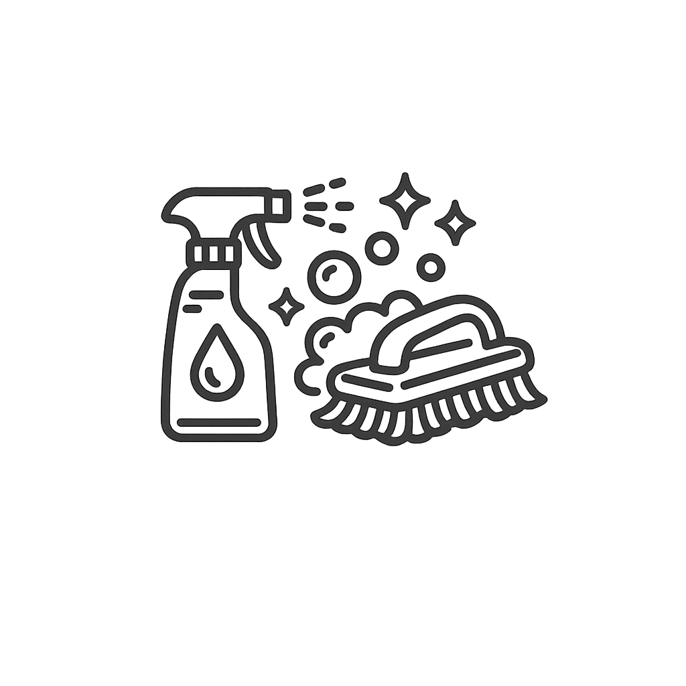
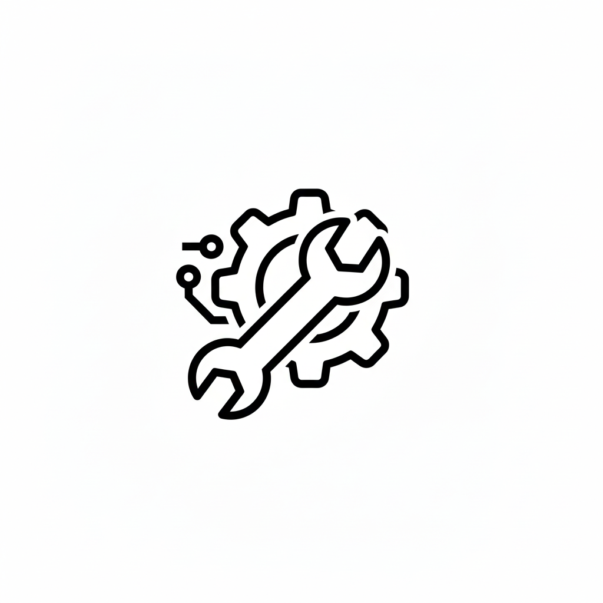
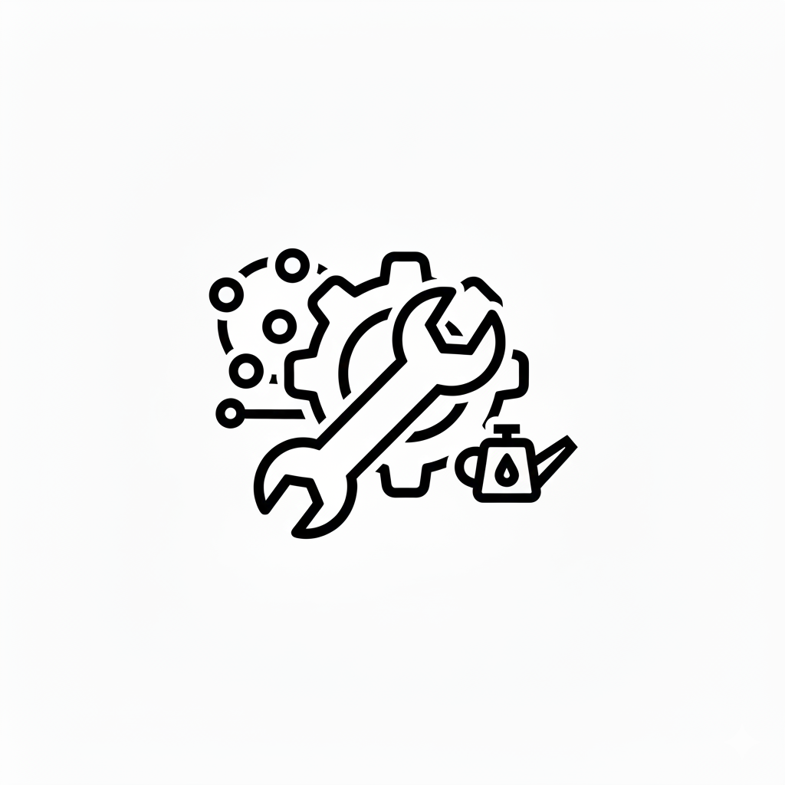
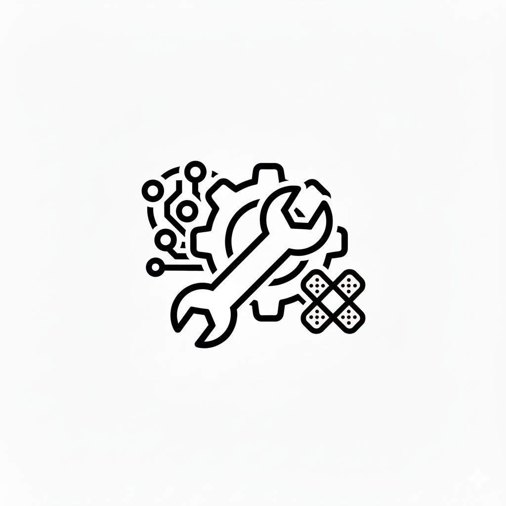
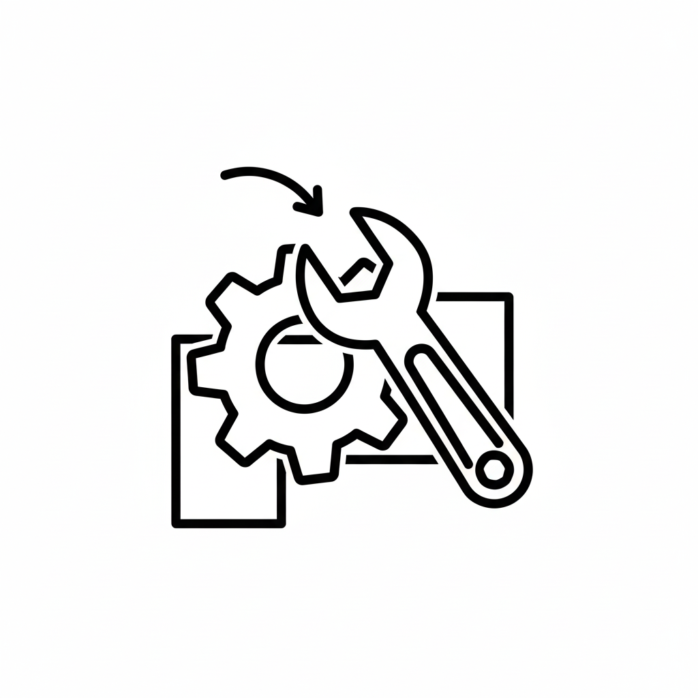
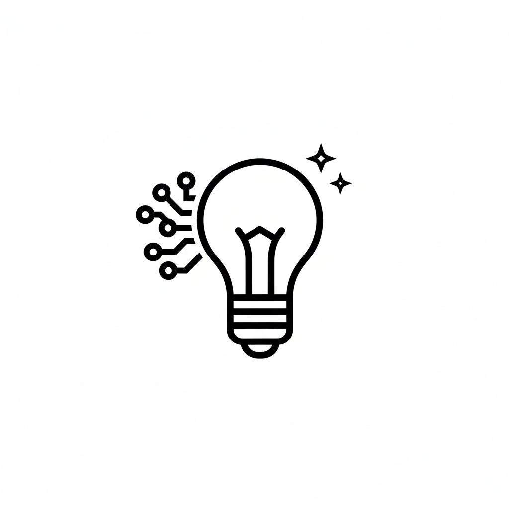
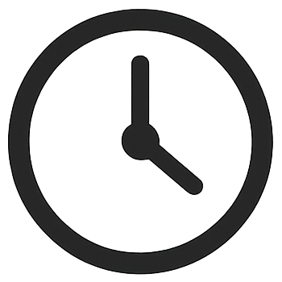
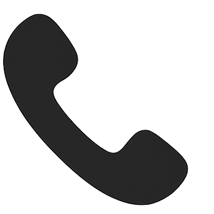
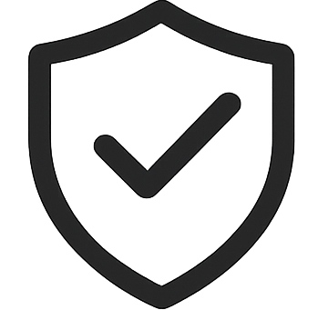
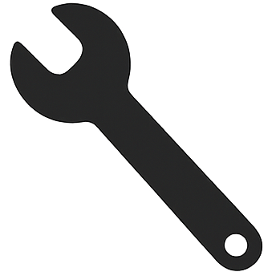

Ofrecemos servicio técnico especializado en la reparación y mantenimiento de máquinas CNC industriales, incluyendo tornos, centros de mecanizado y fresadoras.
Damos soporte a sistemas de control como Siemens, Fanuc y Heidenhain, resolviendo averías electrónicas, mecánicas y de automatización. Nuestro objetivo es minimizar el tiempo de parada de máquina mediante intervenciones rápidas, diagnosis precisa y reparación en campo o en taller.
Nuestros técnicos especializados garantizan tiempos de respuesta rápidos y soluciones personalizadas para cada cliente. Conozca algunas de nuestras intervenciones

Servicio profesional de limpieza de depósitos de taladrina en máquinas CNC. Eliminamos lodos, aceites contaminados y bacterias que afectan al rendimiento y a la vida útil de la máquina.
Saber más sobre limpieza de tanques CNC
Instalación de máquinas CNC industriales, incluyendo tornos y centros de mecanizado. Realizamos puesta en marcha, nivelación, conexionado y verificación de ejes para asegurar el correcto funcionamiento.

Mantenimiento preventivo y correctivo de centros de mecanizado y tornos CNC para evitar paradas de producción y prolongar la vida útil de sus maquinas CNC.
Saber más sobre nuestros mantenimientos
Reparación de máquinas CNC industriales, resolviendo averías en sistemas de control, servo motores y ejes de movimiento...

Actualización de máquinas CNC mediante la sustitución de sistemas de control obsoletos, mejora de servoaccionamientos y adaptación a nuevas tecnologías para prolongar la vida útil de tornos y centros de mecanizado.

Consultoría técnica personalizada para optimizar procesos y producción de cada cliente.
Estos son nuestros principales formatos de mantenimiento, pensados para ofrecer flexibilidad y seguridad a su producción. No obstante, sabemos que cada empresa es diferente, por lo que adaptamos nuestros planes a las necesidades específicas de cada cliente.

Flexibilidad total para asistencia técnica según sus necesidades.

Soporte remoto directo con nuestro equipo de expertos.

Cobertura durante todo el año con prioridad en asistencia.

Revisiones periódicas para reducir riesgos de averías.
Servicio técnico CNC multimarca en maquinaria y controles industriales.
Las marcas mencionadas pertenecen a sus respectivos propietarios. CNC Systems no es servicio técnico oficial de dichas marcas.